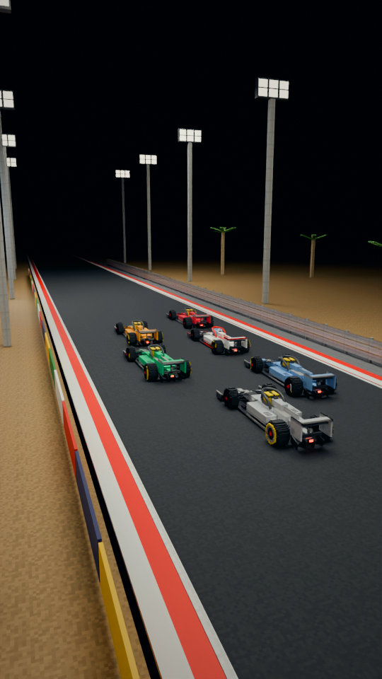
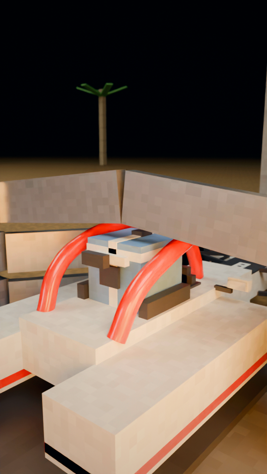
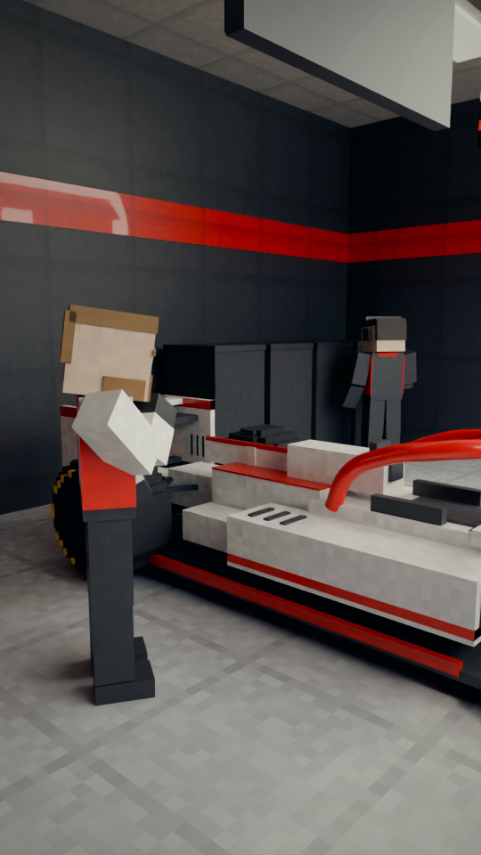
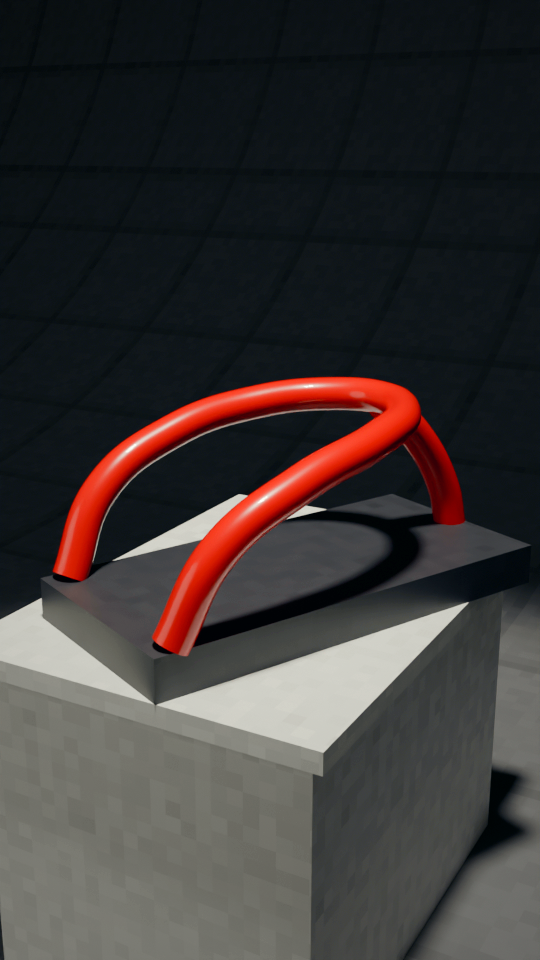
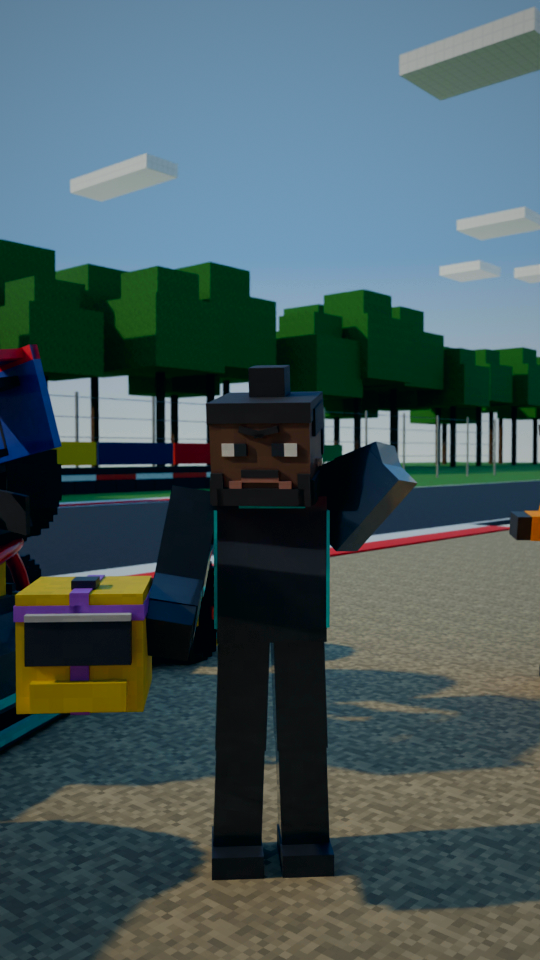
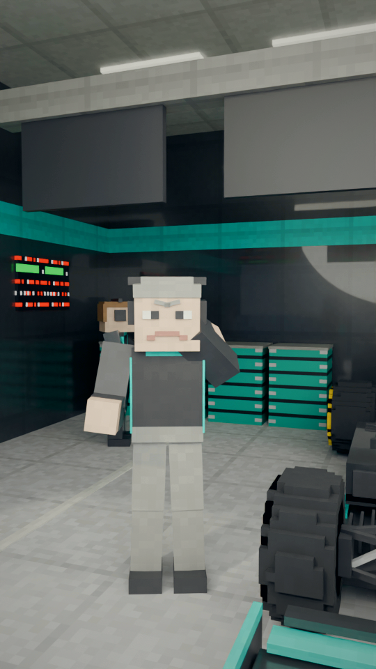
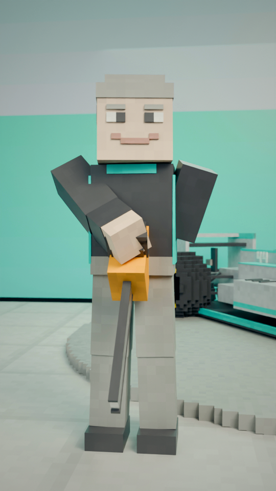

“Grosjean hit a steel barrier at nearly 200 kilometres an hour.”
Low tracking: the white car veers right, straight at the steel barrier.

“His car split in two and burst into flames.”
Dimmed: the car in two halves, the back half burning on the run-off (abstract block flames, no injury).

“The halo shielded his head as the car tore through the steel.”
Close: the front half through the barrier, the red halo holding the torn rails off the helmet.

“Nearly half a minute later, he climbed out of the fire.”
Grosjean climbs over the barrier out of the glow; a marshal sprays the fire.

“Grosjean had doubted it.”
Flashback: Grosjean, hands at his hips, head cocked, sizing up the halo.

“Now he called it the greatest thing F1 had brought in.”
The halo on a white plinth under a spotlight, shown like a trophy.

“Back at Monza, Verstappen's rear tyre hit Hamilton's helmet,”
Back at Monza, side-on: the navy car's rear tyre against Hamilton's helmet, the halo underneath it.

“and the halo pushed it off. Hamilton”
Top-down: the red halo under the tyre, pushing it clear of the cockpit.

“said it saved his neck. His”
Hamilton, helmet off, standing by the wreck, hand on his neck.

“team boss said it had definitely saved his life.”
The pit wall: his team boss on the radio, screens in front of him.

“That boss was Toto Wolff.”
Back on the launch stage, pushing in: the same boss. The chainsaw lies on the floor.

“So next time you call it ugly, just...”
Low behind the cockpit, tilting up: the navy car looms overhead. Loops to shot 1.